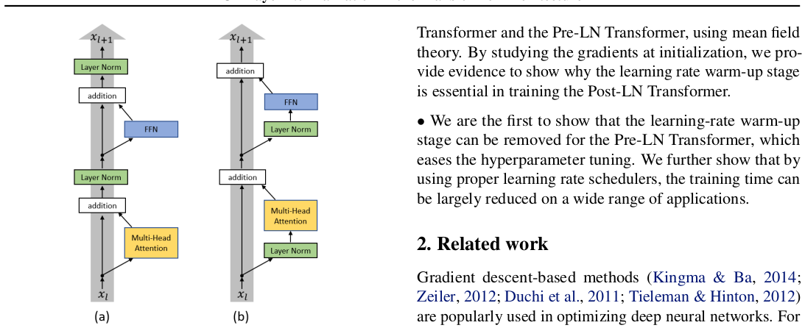
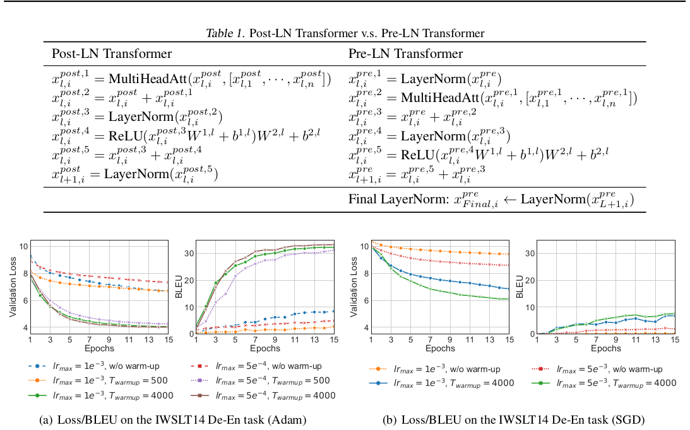
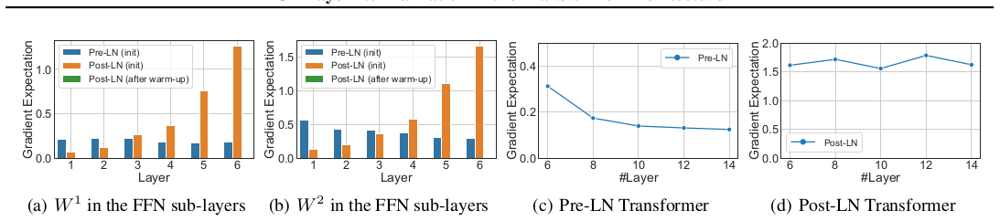
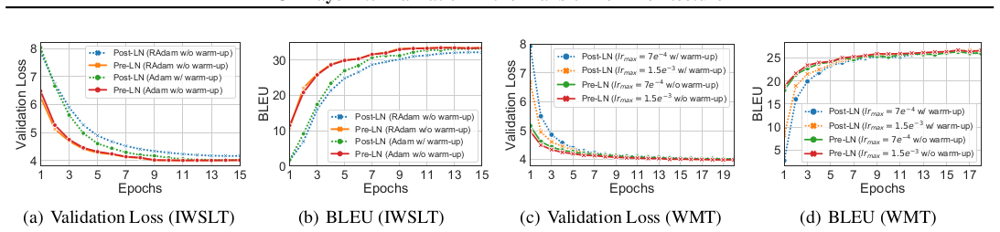
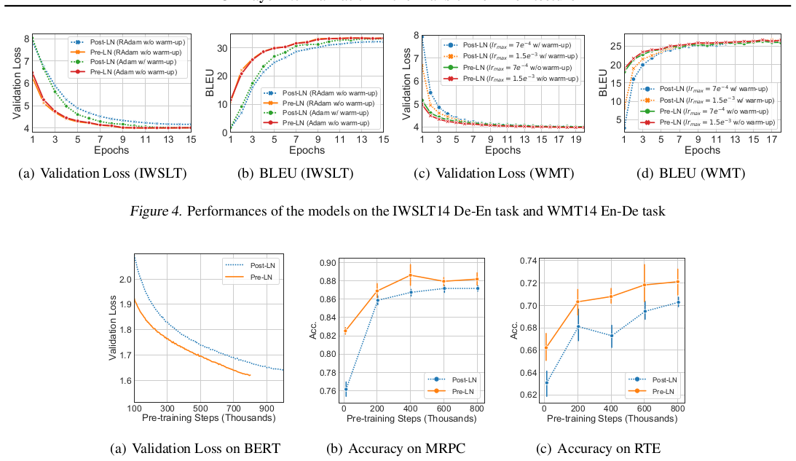
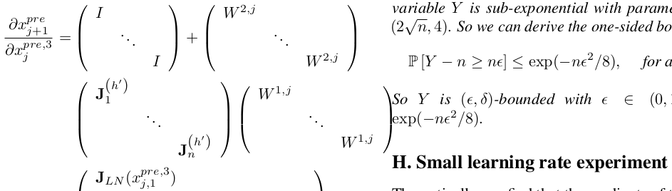

Transformer 广泛用于自然语言处理任务。然而，训练 Transformer 通常需要精心设计的学习率预热（warm-up）阶段，该阶段对最终性能至关重要，但会减慢优化并带来更多超参数调优。本文首先从理论上研究为什么学习率预热阶段是必要的，并表明层归一化的位置很重要。具体而言，我们用平均场理论证明：在初始化时，对于原始设计的 Post-LN Transformer（将层归一化放在残差块之间），输出层附近参数的期望梯度很大。因此，对这些梯度使用大学习率会使训练不稳定，预热阶段在实践中有助于避免该问题。另一方面，我们的理论还表明，如果将层归一化放入残差块内部（最近提出的 Pre-LN Transformer），初始化时梯度表现良好。这促使我们移除 Pre-LN Transformer 训练中的预热阶段。实验表明，在广泛应用中，无预热阶段的 Pre-LN Transformer 可以达到与基线相当的结果，同时显著减少训练时间和超参数调优。
Transformer（Vaswani et al., 2017）是自然语言处理中最常用的神经网络架构之一。层归一化（Lei Ba et al., 2016）在 Transformer 的成功中起关键作用。原始设计的 Transformer 将层归一化放在残差块之间，通常称为带 Post-Layer Normalization 的 Transformer（Post-LN）（Wang et al., 2019）。该架构在语言建模（Dai et al., 2019; Al-Rfou et al., 2018）和机器翻译（Dehghani et al., 2018; Edunov et al., 2018）等许多任务上取得了最先进性能。基于 Post-LN Transformer 架构的无监督预训练模型也在许多下游任务中表现出色（Radford et al., 2019; Devlin et al., 2018; Yang et al., 2019b）。
尽管取得巨大成功，人们通常需要比卷积网络或其他序列到序列模型更小心地处理 Post-LN Transformer 的优化（Popel & Bojar, 2018）。特别是，从头训练模型时，任何基于梯度的优化方法都需要学习率预热阶段（Vaswani et al., 2017; Liu et al., 2019a）：优化从极小学习率开始，然后在预定义迭代次数内逐渐增加到预定义最大值。这样的预热阶段不仅减慢优化过程，还带来更多超参数调优。Popel & Bojar (2018) 表明最终模型性能对最大学习率和预热迭代次数非常敏感。在训练大规模模型（如 BERT（Devlin et al., 2018）或 XLNet（Yang et al., 2019b））时，调优如此敏感的超参数代价高昂。
本文试图通过寻找安全移除学习率预热阶段的方法来缓解该问题。由于预热阶段发生在最初若干迭代，我们用平均场理论（Lee et al., 2017; Xiao et al., 2018; Yang et al., 2019a; Yang, 2019; Lee et al., 2019; Zhang et al., 2019）研究初始化时的优化行为。根据理论分析，当把层归一化放在残差块之间时，输出层附近参数的期望梯度很大。因此，没有预热阶段而直接对这些参数使用大学习率会使优化过程不稳定。使用预热阶段并以小学习率训练模型在实践中避免了该问题。我们提供大量实验支持理论发现。
我们的理论还表明，层归一化在控制梯度尺度方面起关键作用。这促使我们研究是否有其他放置层归一化的方式可导致良好梯度。特别地，我们研究另一种变体：带 Pre-Layer Normalization 的 Transformer（Pre-LN）（Baevski & Auli, 2018; Child et al., 2019; Wang et al., 2019）。Pre-LN Transformer 将层归一化放在残差连接内部，并在预测前增加最终层归一化（两种变体差异见图 1）。我们从理论和实证上表明，初始化时 Pre-LN Transformer 的梯度表现良好，没有爆炸或消失。
鉴于 Pre-LN Transformer 的梯度表现良好，自然考虑在训练中移除学习率预热阶段。我们进行多种实验，包括 IWSLT14 德英翻译、WMT14 英德翻译和 BERT 预训练任务。我们表明，在所有任务中都可以安全移除学习率预热阶段，从而减少超参数数量。此外，我们观察到 Pre-LN Transformer 模型的损失下降更快，可以达到相当的最终性能，但使用少得多的训练时间。这对在大规模数据集上训练大规模模型尤为重要。
我们的贡献总结如下：
基于梯度下降的方法（Kingma & Ba, 2014; Zeiler, 2012; Duchi et al., 2011; Tieleman & Hinton, 2012）广泛用于优化深度神经网络。对于卷积神经网络和循环神经网络，通常一开始设置相对较大的学习率，然后随优化过程降低（He et al., 2016; 2017; Sutskever et al., 2014; Gehring et al., 2017; He et al., 2019）。学习率预热阶段此前仅被证明在处理一些非常特定问题时必要，例如大批量训练。Goyal et al. (2017); He et al. (2019); You et al. (2018) 表明，用极大批量训练神经网络时偏好学习率预热阶段。
然而，在大多数场景中优化 Transformer 模型时，学习率预热阶段是必要且关键的（Vaswani et al., 2017; Devlin et al., 2018; Dai et al., 2019; Radford et al., 2019; Lu et al., 2019）。Popel & Bojar (2018) 研究了不同预热策略对 Post-LN Transformer 优化的影响，发现没有预热或预热迭代相对较少时优化会发散。Pre-LN Transformer 已在若干近期工作中提出（Baevski & Auli, 2018; Child et al., 2019; Wang et al., 2019），以缓解训练更深模型时的一些优化问题，但其训练流程中仍保留麻烦的预热阶段。
Liu et al. (2019a) 声称预热阶段的好处来自降低 Adam 优化器（Kingma & Ba, 2014）中自适应学习率的方差。他们提出一种称为 RAdam 的新 Adam 变体来校正自适应学习率的方差。然而，我们发现不仅对 Adam，学习率预热阶段对其他优化器也有很大帮助。这可能表明 Adam 不是预热阶段必要性的前提。在一项并行独立工作中，Nguyen & Salazar (2019) 也实证观察到 Pre-LN Transformer 可以在没有学习率预热阶段的情况下训练。我们的工作通过理论分析对此进行了更全面的研究。
Transformer 架构通常由堆叠的 Transformer 层组成（Vaswani et al., 2017; Devlin et al., 2018），每层以向量序列为输入，输出形状相同的新向量序列。一个 Transformer 层有两个子层：（多头）自注意力子层和逐位置前馈网络子层。残差连接（He et al., 2016）和层归一化（Lei Ba et al., 2016）分别应用于两个子层。我们先介绍 Transformer 层各组件，再给出整个架构。
自注意力子层：注意力函数可表述为用键—值对查询条目（Vaswani et al., 2017）。自注意力子层使用缩放点积注意力：
其中 \(d\) 是隐藏表示维度，\(Q\)（Query）、\(K\)（Key）、\(V\)（Value）指定为前一层隐藏表示。多头自注意力子层允许模型共同关注来自不同表示子空间的信息，定义为
其中 \(W_k^Q\in\mathbb{R}^{d\times d_K}\)、\(W_k^K\in\mathbb{R}^{d\times d_K}\)、\(W_k^V\in\mathbb{R}^{d\times d_V}\)、\(W^O\in\mathbb{R}^{Hd_V\times d}\) 是投影参数矩阵，\(H\) 是头数，\(d_K,d_V\) 是 Key 和 Value 维度。给定向量序列 \((x_1,\ldots,x_n)\)，我们用 \(\mathrm{MultiHeadAtt}(x_i,[x_1,\dots,x_n])\) 表示位置 \(i\) 上的多头自注意力机制，即 \(\mathrm{MultiHeadAtt}(x_i,[x_1,\dots,x_n])=\mathrm{MultiHead}(x_i,[x_1,\dots,x_n],[x_1,\dots,x_n])\)。
逐位置 FFN 子层：除自注意力子层外，每个 Transformer 层包含一个全连接网络，分别且相同地应用于每个位置。该子层是带 ReLU 激活的两层前馈网络。给定向量序列 \(h_1,\ldots,h_n\)，对任意 \(h_i\) 的逐位置 FFN 子层计算为
其中 \(W^1,W^2,b^1,b^2\) 是参数。
残差连接和层归一化：除上述两个子层外，残差连接和层归一化也是 Transformer 的关键组件。对于任意向量 \(v\)，层归一化计算为 \(\mathrm{LayerNorm}(v)=\gamma\frac{v-\mu}{\sigma}+\beta\)，其中 \(\mu,\sigma\) 是 \(v\) 中元素的均值和标准差，即 \(\mu=\frac{1}{d}\sum_{k=1}^{d}v_k\)，\(\sigma^2=\frac{1}{d}\sum_{k=1}^{d}(v_k-\mu)^2\)。缩放参数 \(\gamma\) 和偏置向量 \(\beta\) 是参数。
Transformer 层中子层、残差连接和层归一化的不同顺序导致不同变体。Transformer 和 BERT 最初且最常用的架构（Vaswani et al., 2017; Devlin et al., 2018）遵循“自注意力（FFN）子层 → 残差连接 → 层归一化”，我们称之为带 Post-Layer Normalization 的 Transformer（Post-LN Transformer），如图 1 所示。
Post-LN Transformer：记 \(x_{l,i}\) 为第 \(l\) 个 Transformer 层在位置 \(i\) 的输入，其中 \(x_{l,i}\) 是维度 \(d\) 的实值向量，\(i=1,2,\ldots,n\)，\(l=1,2,\ldots,L\)。\(n\) 是序列长度，\(L\) 是层数。为完整起见，定义 \(x_{0,i}\) 为位置 \(i\) 的输入嵌入，通常是词嵌入和位置嵌入的组合。第 \(l\) 层内部计算由若干步骤组成，我们用 \(x\) 上的上标表示不同步骤的输入（输出），如表 1（左）所示，其中 \(W^{1,l},W^{2,l},b^{1,l},b^{2,l}\) 是第 \(l\) 层 FFN 子层参数。

我们关注 Post-LN Transformer 优化中的学习率预热阶段。与许多其他架构的优化不同（学习率从相对较大值开始然后衰减）（Bahdanau et al., 2017; Dauphin et al., 2017），Post-LN Transformer 的学习率预热阶段似乎至关重要（Popel & Bojar, 2018）。记第 \(t\) 次迭代学习率为 \(\mathrm{lr}(t)\)，训练中最大学习率为 \(\mathrm{lr}_{max}\)。给定预定义时间范围 \(T_{\mathrm{warmup}}\)，前 \(T_{\mathrm{warmup}}\) 次迭代的学习率调度器（Vaswani et al., 2018）定义为
预热阶段之后，学习率由经典调度器设置，如线性衰减、平方根倒数衰减或在特定迭代强制衰减。我们进行实验表明该学习率预热阶段对训练 Post-LN Transformer 模型是必要的。
实验设置：我们在 IWSLT14 德英（De-En）机器翻译任务上实验。主要研究两方面：学习率预热阶段是否必要，以及最终模型性能是否对 \(T_{\mathrm{warmup}}\) 值敏感。为研究第一方面，分别用 Adam 优化器（Kingma & Ba, 2014）和 vanilla SGD 优化器（Ruder, 2016）训练模型。对于两种优化器，检查是否可以移除预热阶段。遵循 Vaswani et al. (2017) 将 Adam 中 \(\beta\) 设为 \((0.9,0.98)\)。我们还为两种优化器测试不同 \(\mathrm{lr}_{max}\)：Adam 设 \(\mathrm{lr}_{max}=5e^{-4}\) 或 \(1e^{-3}\)，SGD 设 \(\mathrm{lr}_{max}=5e^{-3}\) 或 \(1e^{-3}\)。使用预热阶段时，按原论文建议设 \(T_{\mathrm{warmup}}=4000\)。为研究第二方面，设 \(T_{\mathrm{warmup}}\) 为 \(1/500/4000\)（“1”指无预热设置），Adam 使用 \(\mathrm{lr}_{max}=5e^{-4}\) 或 \(1e^{-3}\)。所有实验在预热后使用相同平方根倒数学习率调度器。我们使用验证损失和 BLEU（Papineni et al., 2002）作为模型性能评估指标。
结果与讨论：我们记录训练中每个 epoch 的模型检查点，计算验证损失和 BLEU 分数。模型性能见图 2(a) 和图 2(b)。x 轴为 epoch 数，y 轴为 BLEU 分数/验证损失。“w/o warm-up”表示“无预热阶段”，“w/ warm-up”表示“有预热阶段”。
首先，对于两种优化器，学习率预热阶段都是必要的。没有预热阶段，Adam 优化器训练的模型 BLEU 只能达到 8.45；作为对比，使用预热阶段的模型 BLEU 可达约 34。验证损失曲线也呈现相同趋势。尽管 SGD 训练的模型性能显著差于 Adam，但仍可看到类似现象：没有预热阶段时，15 个 epoch 后 BLEU 仅略高于零。
其次，优化过程对 \(T_{\mathrm{warmup}}\) 值敏感，这意味着 \(T_{\mathrm{warmup}}\) 是训练 Post-LN Transformer 的重要超参数。例如，设 \(T_{\mathrm{warmup}}=500\) 时，Adam 学习到的模型在 \(\mathrm{lr}_{max}=5e^{-4}\) 和 \(1e^{-3}\) 时 BLEU 分别仅为 31.16 和 2.77。
这种预热阶段有几个缺点。第一，其配置显著影响最终性能，实践者需要仔细调参，这对大规模 NLP 任务计算昂贵。第二，预热阶段可能减慢优化。标准优化算法通常以较大学习率开始以快速收敛，但使用预热阶段时学习率必须从零逐渐增加，可能使训练低效。Liu et al. (2019a) 认为预热阶段在减少 Adam 早期训练中不期望的大方差方面起作用。然而根据我们的结果，预热阶段也有助于 SGD 训练，这表明预热阶段的好处可能不是针对特定优化器。

可以看到 Post-LN Transformer 无法从头用大学习率训练。这促使我们研究模型初始化时发生了什么。先介绍理论分析的参数初始化设置，再给出理论发现。
记号：记 \(\mathcal{L}(\cdot)\) 为单个位置的损失函数，\(\tilde{\mathcal{L}}(\cdot)\) 为整个序列的损失函数，\(\|\cdot\|_2\) 和 \(\|\cdot\|_F\) 分别为 \(l_2\) 范数（谱范数）和 Frobenius 范数，\(\mathrm{LN}(x)\) 为缩放 \(\gamma=1\)、偏置 \(\beta=0\) 的标准层归一化，\(\mathbf{J}_{LN}(x)=\frac{\partial\mathrm{LN}(x)}{\partial x}\) 为 \(\mathrm{LN}(x)\) 的雅可比矩阵。令 \(\mathcal{O}(\cdot)\) 表示标准 Big-O 记号，省略乘法常数。
参数初始化：每个 Transformer 层中的参数矩阵通常用 Xavier 初始化（Glorot & Bengio, 2010）。给定大小为 \(n_{in}\times n_{out}\) 的矩阵，Xavier 初始化从高斯分布 \(N(0,\frac{2}{n_{in}+n_{out}})\) 独立采样每个元素。偏置向量通常初始化为零向量。层归一化中的缩放 \(\gamma\) 设为 1。
为理论分析，我们研究更简单的设置。第一，关注单头注意力而非多头变体，并对所有层设 \(W^{Q,l},W^{K,l},W^{V,l},W^{1,l},W^{2,l}\) 形状为 \(d\times d\)。第二，将自注意力子层中的参数矩阵 \(W^{Q,l}\) 和 \(W^{K,l}\) 初始化为零矩阵。在此设置下，初始化时注意力为均匀分布，\(\mathrm{MultiHeadAtt}(x_{l,i}^1,[x_{l,1}^1,x_{l,2}^1,\dots,x_{l,n}^1])\) 可简化为 \(\frac{1}{n}\sum_{j=1}^{n}x_{l,j}^1W^{V,l}\)。第三，假设输入向量也从相同高斯分布采样。这是合理的，因为输入是词嵌入和可学习位置嵌入的线性组合，二者都由高斯分布初始化。
Post-LN Transformer 与 Pre-LN Transformer：我们将 Post-LN Transformer 与另一种变体 Pre-LN 比较。Pre-LN Transformer 已在若干系统中实现（Vaswani et al., 2018; Klein et al., 2018; Liu et al., 2019b）。Wang et al. (2019) 认为层数增加时 Pre-LN 优于 Post-LN。与将层归一化放在残差块之间的 Post-LN 不同，Pre-LN 将层归一化放在残差连接内部，并置于所有其他非线性变换之前。此外，Pre-LN 在预测前使用最终层归一化。我们在表 1 和图 1 中给出 Post-LN/Pre-LN 的数学表述和可视化。
对于两种架构，每个 \(x_{L,i}\) 通过 softmax 层产生字典 \(V\) 上的分布，损失函数定义在 softmax 分布上。例如，在序列预测中，Post-LN 的损失为 \(\mathcal{L}(x_{L+1,i}^{post})=-\log(\mathrm{softmax}_{y_i}(W_{L+1,i}^{emb,post}))\)，Pre-LN 的损失为 \(\mathcal{L}(x_{Final,i}^{pre})=-\log(\mathrm{softmax}_{y_i}(W_{L+1,i}^{emb,pre}))\)，其中 \(\mathrm{softmax}_{y_i}\) 是 softmax 分布输出真实词元 \(y_i\) 的概率，\(W^{emb}\) 是词嵌入矩阵。整个序列损失是各位置损失的平均。不失一般性，假设所有导数有界。引入以下随机变量集中性质，后续定理将使用。
定义 1：若随机变量 \(Z\ge0\) 以至少 \(1-\delta\) 的概率满足 \(\frac{Z-\mathbb{E}Z}{Z}\le\epsilon\)，其中 \(\epsilon>0\)、\(0<\delta<1\)，则称 \(Z\) 是 \((\epsilon,\delta)\)-有界的。
直观上，若 \(Z\) 是 \((\epsilon,\delta)\)-有界的，则高概率下其实现不会远离期望。例如，若 \(Y\) 是 \(d\) 维标准高斯随机向量，则 \(Z=\|Y\|_2^2\) 是 \((\epsilon,\delta)\)-有界的，\(\delta=\exp(-d\epsilon^2/8)\)，\(0<\epsilon<1\)（详见补充材料）。由于自注意力子层和 FFN 子层参数矩阵由高斯分布初始化，若 Transformer 中隐藏状态范数满足上述集中条件，则有如下定理刻画梯度尺度。
定理 1（Transformer 最后一层的梯度）：假设对所有 \(i\)，\(\|x_{L,i}^{post,5}\|_2^2\) 和 \(\|x_{L+1,i}^{pre}\|_2^2\) 是 \((\epsilon,\delta)\)-有界的，其中 \(\epsilon\) 和 \(\delta=\delta(\epsilon)\) 是小量。则以至少 \(0.99-\delta-\frac{\epsilon}{0.9+\epsilon}\) 的概率，对于 \(L\) 层 Post-LN Transformer，最后一层参数的梯度满足
而对于 \(L\) 层 Pre-LN Transformer，
| Post-LN Transformer | Pre-LN Transformer |
|---|---|
| \(x^{1}=\mathrm{MultiHeadAtt}(x,[x_1,\dots,x_n])\) | \(x^{1}=\mathrm{LayerNorm}(x)\) |
| \(x^{2}=x+x^{1}\) | \(x^{2}=\mathrm{MultiHeadAtt}(x^{1},[x^{1}_1,\dots,x^{1}_n])\) |
| \(x^{3}=\mathrm{LayerNorm}(x^{2})\) | \(x^{3}=x+x^{2}\) |
| \(x^{4}=\mathrm{FFN}(x^{3})\) | \(x^{4}=\mathrm{LayerNorm}(x^{3})\) |
| \(x^{5}=x^{3}+x^{4}\) | \(x^{5}=\mathrm{FFN}(x^{4})\) |
| \(x_{\mathrm{out}}=\mathrm{LayerNorm}(x^{5})\) | \(x_{\mathrm{out}}=x^{3}+x^{5}\) |
由定理 1 可见，对于 Post-LN Transformer，最后一层 FFN 的梯度尺度为 \(\mathcal{O}(d\sqrt{\ln d})\)，与 \(L\) 无关。对于 Pre-LN Transformer，梯度尺度小得多。我们首先研究 Post-LN 和 Pre-LN 的前向传播。引理 1 将作为证明主定理和其他引理的基本工具。
引理 1：若 \(X\in\mathbb{R}^d\) 是高斯向量，\(X\sim N(0,\sigma^2\mathbf{I}_d)\)，则 \(\mathbb{E}(\|\mathrm{ReLU}(X)\|_2^2)=\frac{1}{2}\sigma^2d\)。
基于引理 1，有如下引理估计 Post-LN 和 Pre-LN 不同层隐藏状态的尺度。
引理 2：初始化时，对于 Post-LN Transformer，对所有 \(l>0\) 和 \(i\)，\(\mathbb{E}(\|x_{l,i}^{post,5}\|_2^2)=\frac{3}{2}d\)。对于 Pre-LN Transformer，对所有 \(l>0\) 和 \(i\)，\((1+\frac{l}{2})d\le\mathbb{E}(\|x_{l,i}^{pre,5}\|_2^2)\le(1+\frac{3l}{2})d\)。期望对输入和初始化随机性取。
引理 2 研究两种架构隐藏状态的期望范数。显然 Post-LN 中 \(x_{l,i}^{post}\) 的范数为 \(\sqrt{d}\)，因此我们研究 \(x_{l,i}^{post,5}\) 的范数。由引理 2 可见，Post-LN 中隐藏状态尺度期望保持不变，而 Pre-LN 中隐藏状态尺度随深度线性增长。下一引理表明，在使用层归一化的架构中，隐藏状态尺度与梯度尺度高度相关。
引理 3：对于 \(x\in\mathbb{R}^d\)，有 \(\|\mathbf{J}_{LN}(x)\|_2=\mathcal{O}(\frac{\sqrt{d}}{\|x\|_2})\)，其中 \(\mathbf{J}_{LN}(x)=\frac{\partial\mathrm{LN}(x)}{\partial x}\)。
引理 1、2、3 和定理 1 的证明见补充材料。主要思想是层归一化会归一化梯度。Post-LN 中，层归一化输入的尺度与 \(L\) 无关，因此最后一层参数梯度与 \(L\) 无关。而 Pre-LN 中，最终层归一化输入的尺度与 \(L\) 线性相关，因此所有参数梯度会被 \(\sqrt{L}\) 归一化。
扩展到其他层/参数：上文对最后 FFN 子层梯度给出形式证明。为全面理解优化，我们还对其他层和其他参数做初步分析。主要结果是：Post-LN 中输出附近参数梯度范数很大，且可能随层索引 \(l\) 减小而衰减；相反，Pre-LN 中任意层 \(l\) 的梯度范数可能保持不变。所有初步理论结果见补充材料。
由于理论基于若干简化，我们进行实验研究理论洞见是否与真实场景一致。模型和训练配置完全遵循 3.2 节。实验用不同随机种子重复十次。
关于集中性质：给定初始化模型，我们跨批次记录 Post-LN/Pre-LN 中隐藏状态，发现隐藏状态范数满足该性质（(0.1,0.125)-有界）。
关于定理 1：定理 1 表明，对于任意大小的 Post-LN，最后 FFN 子层梯度范数尺度保持不变；相反，Pre-LN 的梯度范数随模型增大而减小。我们计算并记录 6-6/8-8/10-10/12-12/14-14 Post-LN/Pre-LN 模型初始化时最后 FFN 子层的梯度范数。结果见图 3(c) 和 3(d)。x 轴为模型大小，y 轴为最终 FFN 子层中 \(W^2\) 的梯度范数。图中显示，随层数增长，Post-LN 的梯度范数保持（约 1.6），Pre-LN 的梯度范数下降。这与理论一致。

关于扩展理论：我们计算 6-6 Post-LN/Pre-LN 中每个参数矩阵的梯度范数。对不同小批量记录每个参数梯度。对参数矩阵元素计算期望梯度，并用这些值的 Frobenius 范数作为矩阵期望梯度尺度。图 3(a) 和 3(b) 展示 FFN 子层统计。x 轴索引不同 Transformer 层。图中可见，Post-LN 的期望梯度尺度随层索引增长；相反，Pre-LN 中不同层尺度几乎保持不变。这些观察与理论发现一致。
Post-LN 的关键预热阶段：基于上述分析，我们假设梯度尺度是 Post-LN 需要仔细学习率调度的原因之一。由于某些层梯度很大，没有预热而使用大学习率可能使训练不稳定。为验证，首先研究 Adam 预热阶段后 Post-LN 的梯度统计。从图 3(a) 和 3(b) 可见，
（原文此处图像 OCR 噪声较多，正文后续讨论 Pre-LN 在 IWSLT/WMT/BERT 上的性能，见第 4 节。）
本节展示 Pre-LN Transformer 在机器翻译和 BERT 预训练任务上的实验。主要比较 Post-LN 和 Pre-LN 在有无预热阶段时的性能，并展示 Pre-LN 收敛更快。


在 IWSLT14 De-En 和 WMT14 En-De 任务上，Pre-LN Transformer 的 BLEU 分数和验证损失可达到约 34 和 4，与 Post-LN 相当。第二，相同 \(\mathrm{lr}_{max}\) 下 Pre-LN 比 Post-LN 收敛更快。在 IWSLT14 De-En 上，Pre-LN 第 9 个检查点达到与 Post-LN 第 15 个检查点几乎相同的性能（验证损失/BLEU）。WMT14 En-De 也有类似观察。第三，与 RAdam 相比，我们发现层归一化位置的变化“支配”优化器的变化。根据 IWSLT14 De-En 实验，尽管 RAdam 可以在无预热阶段下训练 Post-LN，但训练 Pre-LN 时与 Adam 差别不大。
无监督预训练（BERT）：我们记录模型检查点验证损失，见图 5(a)。与机器翻译任务类似，Pre-LN 模型可以移除学习率预热阶段。Pre-LN 模型训练更快。例如，Post-LN 在 500k 更新时达到 1.69 验证损失，而 Pre-LN 在 700k 更新时达到类似验证损失，表明约 40% 加速。注意 \(T_{warmup}\)（10k）远小于加速量（200k），表明 Pre-LN 更容易用较大学习率优化。我们还在下游任务 MRPC 和 RTE 上评估不同检查点（细节见补充材料），结果见图 5(b) 和 5(c)。可见 Pre-LN 在下游任务上也收敛更快。
总之，不同任务上的所有实验表明，训练 Pre-LN Transformer 不依赖学习率预热阶段，并且可以比 Post-LN 训练快得多。
本文研究为什么学习率预热阶段在训练 Transformer 中重要，并表明层归一化的位置很重要。我们表明，在原始 Transformer 中（层归一化位于残差块外），初始化时输出层附近参数的期望梯度很大，导致使用大学习率时训练不稳定。我们进一步表明，将层归一化放在残差块内的 Transformer 可以在没有预热阶段的情况下训练，并且收敛快得多。未来我们将研究其他层归一化放置策略，并从理论角度理解 Transformer 的优化。
Al-Rfou, R., Choe, D., Constant, N., Guo, M., and Jones, L. Character-level language modeling with deeper self-attention. arXiv preprint arXiv:1808.04444, 2018.
Baevski, A. and Auli, M. Adaptive input representations for neural language modeling. arXiv preprint arXiv:1809.10853, 2018.
Bahdanau, D., Cho, K., and Bengio, Y. Neural machine translation by jointly learning to align and translate. 2017.
Bentivogli, L., Dagan, I., Dang, H. T., Giampiccolo, D., and Magnini, B. The fifth PASCAL recognizing textual entailment challenge. 2009.
Child, R., Gray, S., Radford, A., and Sutskever, I. Generating long sequences with sparse transformers. arXiv preprint arXiv:1904.10509, 2019.
Dai, Z., Yang, Z., Yang, Y., Cohen, W. W., Carbonell, J., Le, Q. V., and Salakhutdinov, R. Transformer-xl: Attentive language models beyond a fixed-length context. arXiv preprint arXiv:1901.02860, 2019.
Dauphin, Y. N., Fan, A., Auli, M., and Grangier, D. Language modeling with gated convolutional networks. In International Conference on Machine Learning, pp. 933–941, 2017.
Dehghani, M., Gouws, S., Vinyals, O., Uszkoreit, J., and Kaiser, L. Universal transformers. arXiv preprint arXiv:1807.03819, 2018.
Devlin, J., Chang, M.-W., Lee, K., and Toutanova, K. Bert: Pre-training of deep bidirectional transformers for language understanding. arXiv preprint arXiv:1810.04805, 2018.
Dolan, W. B. and Brockett, C. Automatically constructing a corpus of sentential paraphrases. In Proceedings of the International Workshop on Paraphrasing, 2005.
Duchi, J., Hazan, E., and Singer, Y. Adaptive subgradient methods for online learning and stochastic optimization. Journal of Machine Learning Research, 12(Jul):2121–2159, 2011.
Edunov, S., Ott, M., Auli, M., and Grangier, D. Understanding back-translation at scale. arXiv preprint arXiv:1808.09381, 2018.
Gehring, J., Auli, M., Grangier, D., Yarats, D., and Dauphin, Y. N. Convolutional sequence to sequence learning. In International Conference on Machine Learning, pp. 1243–1252, 2017.
Glorot, X. and Bengio, Y. Understanding the difficulty of training deep feedforward neural networks. In Proceedings of the thirteenth international conference on artificial intelligence and statistics, pp. 249–256, 2010.
Goyal, P., Dollar, P., Girshick, R., Noordhuis, P., Wesolowski, L., Kyrola, A., Tulloch, A., Jia, Y., and He, K. Accurate, large minibatch sgd: Training imagenet in 1 hour. arXiv preprint arXiv:1706.02677, 2017.
He, K., Zhang, X., Ren, S., and Sun, J. Deep residual learning for image recognition. In Proceedings of the IEEE conference on computer vision and pattern recognition, pp. 770–778, 2016.
He, K., Gkioxari, G., Dollar, P., and Girshick, R. Mask r-cnn. In Proceedings of the IEEE international conference on computer vision, pp. 2961–2969, 2017.
He, T., Zhang, Z., Zhang, H., Zhang, Z., Xie, J., and Li, M. Bag of tricks for image classification with convolutional neural networks. In Proceedings of the IEEE Conference on Computer Vision and Pattern Recognition, pp. 558–567, 2019.
Kingma, D. P. and Ba, J. Adam: A method for stochastic optimization. arXiv preprint arXiv:1412.6980, 2014.
Klein, G., Kim, Y., Deng, Y., Nguyen, V., Senellart, J., and Rush, A. Openmmt: Neural machine translation toolkit. In Proceedings of the 13th Conference of the Association for Machine Translation in the Americas (Volume 1: Research Papers), volume 1, pp. 177–184, 2018.
Koehn, P., Hoang, H., Birch, A., Callison-Burch, C., Federico, M., Bertoldi, N., Cowan, B., Shen, W., Moran, C., Zens, R., et al. Moses: Open source toolkit for statistical machine translation. In Proceedings of the 45th annual meeting of the association for computational linguistics companion volume proceedings of the demo and poster sessions, pp. 177–180, 2007.
Lee, J., Bahri, Y., Novak, R., Schoenholz, S. S., Pennington, J., and Sohl-Dickstein, J. Deep neural networks as gaussian processes. arXiv preprint arXiv:1711.00165, 2017.
Lee, J., Xiao, L., Schoenholz, S. S., Bahri, Y., Sohl-Dickstein, J., and Pennington, J. Wide neural networks of any depth evolve as linear models under gradient descent. arXiv preprint arXiv:1902.06720, 2019.
Lei Ba, J., Kiros, J. R., and Hinton, G. E. Layer normalization. arXiv preprint arXiv:1607.06450, 2016.
Liu, L., Jiang, H., He, P., Chen, W., Liu, X., Gao, J., and Han, J. On the variance of the adaptive learning rate and beyond. arXiv preprint arXiv:1908.03265, 2019a.
Liu, Y., Ott, M., Goyal, N., Du, J., Joshi, M., Chen, D., Levy, O., Lewis, M., Zettlemoyer, L., and Stoyanov, V. Roberta: A robustly optimized bert pretraining approach. arXiv preprint arXiv:1907.11692, 2019b.
Lu, Y., Li, Z., He, D., Sun, Z., Dong, B., Qin, T., Wang, L., and Liu, T.-Y. Understanding and improving transformer from a multi-particle dynamic system point of view. arXiv preprint arXiv:1906.02762, 2019.
Nguyen, T. Q. and Salazar, J. Transformers without tears: Improving the normalization of self-attention. arXiv preprint arXiv:1910.05895, 2019.
Papineni, K., Roukos, S., Ward, T., and Zhu, W.-J. Bleu: a method for automatic evaluation of machine translation. In Proceedings of the 40th annual meeting on association for computational linguistics, pp. 311–318. Association for Computational Linguistics, 2002.
Popel, M. and Bojar, O. Training tips for the transformer model. The Prague Bulletin of Mathematical Linguistics, 110(1):43–70, 2018.
Radford, A., Wu, J., Child, R., Luan, D., Amodei, D., and Sutskever, I. Language models are unsupervised multitask learners. 2019.
Ruder, S. An overview of gradient descent optimization algorithms. arXiv preprint arXiv:1609.04747, 2016.
Sennrich, R., Haddow, B., and Birch, A. Neural machine translation of rare words with subword units. arXiv preprint arXiv:1508.07909, 2015.
Sennrich, R., Haddow, B., and Birch, A. Neural machine translation of rare words with subword units. In ACL, 2016.
Sutskever, I., Vinyals, O., and Le, Q. V. Sequence to sequence learning with neural networks. In Advances in neural information processing systems, pp. 3104–3112, 2014.
Szegedy, C., Vanhoucke, V., Ioffe, S., Shlens, J., and Wojna, Z. Rethinking the inception architecture for computer vision. In Proceedings of the IEEE Conference on Computer Vision and Pattern Recognition, pp. 2818–2826, 2016.
Tieleman, T. and Hinton, G. Lecture 6.5-rmsprop, coursera: Neural networks for machine learning. University of Toronto, Technical Report, 2012.
Vaswani, A., Shazeer, N., Parmar, N., Uszkoreit, J., Jones, L., Gomez, A. N., Kaiser, L., and Polosukhin, I. Attention is all you need. In Advances in neural information processing systems, pp. 5998–6008, 2017.
Vaswani, A., Bengio, S., Brevdo, E., Chollet, F., Gomez, A. N., Gouws, S., Jones, L., Kaiser, L., Kalchbrenner, N., Parmar, N., Sepassi, R., Shazeer, N., and Uszkoreit, J. Tensor2tensor for neural machine translation. CoRR, abs/1803.07416, 2018.
Wainwright, M. J. High-dimensional statistics: A non-asymptotic viewpoint, volume 48. Cambridge University Press, 2019.
Wang, Q., Li, B., Xiao, T., Zhu, J., Li, C., Wong, D. F., and Chao, L. S. Learning deep transformer models for machine translation. arXiv preprint arXiv:1906.01787, 2019.
Xiao, L., Bahri, Y., Sohl-Dickstein, J., Schoenholz, S., and Pennington, J. Dynamical isometry and a mean field theory of cnns: How to train 10,000-layer vanilla convolutional neural networks. In International Conference on Machine Learning, pp. 5389–5398, 2018.
Yang, G. Scaling limits of wide neural networks with weight sharing: Gaussian process behavior, gradient independence, and neural tangent kernel derivation. arXiv preprint arXiv:1902.04760, 2019.
Yang, G., Pennington, J., Rao, V., Sohl-Dickstein, J., and Schoenholz, S. S. A mean field theory of batch normalization. arXiv preprint arXiv:1902.08129, 2019a.
Yang, Z., Dai, Z., Yang, Y., Carbonell, J., Salakhutdinov, R., and Le, Q. V. Xlnet: Generalized autoregressive pretraining for language understanding. arXiv preprint arXiv:1906.08237, 2019b.
You, Y., Zhang, Z., Hsieh, C.-J., Demmel, J., and Keutzer, K. Imagenet training in minutes. In Proceedings of the 47th International Conference on Parallel Processing, pp. 1. ACM, 2018.
Zeiler, M. D. Adadelta: an adaptive learning rate method. arXiv preprint arXiv:1212.5701, 2012.
Zhang, H., Dauphin, Y. N., and Ma, T. Fixup initialization: Residual learning without normalization. arXiv preprint arXiv:1901.09321, 2019.
Zhu, Y., Kiros, R., Zemel, R., Salakhutdinov, R., Urtasun, R., Torralba, A., and Fidler, S. Aligning books and movies: Towards story-like visual explanations by watching movies and reading books. In arXiv preprint arXiv:1506.06724, 2015.
第 3 节实验：IWSLT14 德英（De-En）任务的训练/验证/测试集分别约 153K/7K/7K 句对。我们使用基于联合源目标字节对编码（BPE）（Sennrich et al., 2015）的 10K 词表。所有实验使用 6 层编码器和 6 层解码器的 Transformer 架构。嵌入大小 512，注意力子层和逐位置前馈网络子层隐藏节点大小分别为 512 和 1024，头数 4。使用标签平滑交叉熵作为目标函数，\(\epsilon=0.1\)（Szegedy et al., 2016），dropout 比例 0.1。批量大小 4096 词元。推理解码时束大小 5，长度惩罚 1.2。
第 4 节实验：IWSLT14 De-En 配置与第 3 节相同。WMT14 En-De 任务复制（Vaswani et al., 2017）设置，约 450 万训练平行句对，使用基于联合源目标 BPE 的 37K 词表。Newstest2013 作验证集，Newstest2014 作测试集。Transformer base 设置：6 层编码器和 6 层解码器，隐藏节点和嵌入大小 512，头数 8。标签平滑交叉熵 \(\epsilon=0.1\)。在 16 块 NVIDIA Tesla P40 GPU 上每 GPU 批量 8192 词元。
遵循 Devlin et al. (2018) 使用英文 Wikipedia 语料和 BookCorpus 预训练。由于 BookCorpus（Zhu et al., 2015）不再自由分发，我们按 Devlin et al. (2018) 建议自行爬取收集。两数据集拼接约 34 亿词，与 Devlin et al. (2018) 语料相当。先用 Spacy 将文档分句；然后用 Moses（Koehn et al., 2007）归一化、小写化和分词，并应用 BPE（Sennrich et al., 2016）。随机划分文档为训练集和验证集，预训练训练/验证比 199:1。所有实验在 32 块 NVIDIA Tesla P40 GPU 上进行。base 模型 12 层 Transformer，隐藏节点和嵌入大小 768，头数 12。
MRPC：Microsoft Research Paraphrase Corpus（Dolan & Brockett, 2005）是从在线新闻来源自动提取的句对语料，人工标注句对是否语义等价，任务是预测等价性，用准确率评估。
RTE：Recognizing Textual Entailment（RTE）数据集来自一系列年度文本蕴涵挑战（Bentivogli et al., 2009）。任务是预测句对中句子是否蕴涵，用准确率评估。
GLUE 微调：使用验证集评估。遵循 Devlin et al. (2018); Liu et al. (2019b)，在批量大小（16/32）、学习率（\(1e^{-5}-1e^{-4}\)）和 epoch 数（3-8）搜索空间调优。我们发现验证准确率对随机种子敏感，因此每个任务用不同随机种子重复微调 6 次，计算验证准确率 95% 置信区间。
原文附录 B-H 包含引理 1、引理 2、引理 3、定理 1 的详细证明，以及其他层扩展、\((\epsilon,\delta)\)-有界随机变量示例和小学习率实验。由于篇幅和 OCR 噪声，以下仅保留证明思路与关键结论；完整逐行证明请参见原论文附录。
引理 1 证明思路：利用高斯分布对称性和 ReLU 定义，计算 \(\mathbb{E}[\mathrm{ReLU}(X_i)^2]=\frac{1}{2}\mathbb{E}[X_i^2]=\frac{1}{2}\sigma^2\)，求和得 \(\frac{1}{2}\sigma^2d\)。
引理 2 证明思路：初始化时层归一化将向量投影到半径 \(\sqrt{d}\) 的 \(d-1\) 维球面，因此 \(\|\mathrm{LN}(v)\|_2^2=d\)。对 Post-LN，逐层计算中间输出期望范数，得到 \(\mathbb{E}\|x_{l,i}^{post,5}\|_2^2=\frac{3}{2}d\)。对 Pre-LN，由于残差连接累积，得到 \((1+\frac{l}{2})d\le\mathbb{E}\|x_{l,i}^{pre,5}\|_2^2\le(1+\frac{3l}{2})d\)。
引理 3 证明思路：显式计算层归一化雅可比 \(\frac{\partial\mathrm{LN}(x)}{\partial y}=\frac{\sqrt{d}}{\|y\|_2}(I-\frac{y^\top y}{\|y\|_2^2})\)，结合链式法则得到 \(\|\mathbf{J}_{LN}(x)\|_2=\mathcal{O}(\frac{\sqrt{d}}{\|x\|_2})\)。
定理 1 证明思路：分别估计 Post-LN 和 Pre-LN 最后 FFN 参数梯度矩阵的每个元素。利用损失对最后层输出的导数有界、层归一化雅可比尺度、ReLU 输出范数集中不等式和联合界，得到 Post-LN 梯度 Frobenius 范数上界 \(\mathcal{O}(d\sqrt{\ln d})\)，Pre-LN 上界 \(\mathcal{O}(d\sqrt{\ln d/L})\)。
扩展到其他层：对第 \(l\) 层参数，Post-LN 梯度中包含随层索引变化的项，输出附近梯度大、向低层可能衰减；Pre-LN 中梯度范数在较大 \(l\) 时与 \(l\) 基本无关。
小学习率实验：理论上输出附近参数梯度很大，使用大学习率不稳定。为验证小步更新是否缓解，我们在优化初期固定学习率 \(1e^{-4}\)（远小于 \(1e^{-3}\)）训练 Post-LN，结果见图 6。验证损失在第 27 个 epoch 约 4.3，远低于大学习率训练的 Post-LN，但仍差于 SOTA（绿色曲线）。

说明：本文档为所提供 PDF 内容的中文翻译版；参考文献保留英文原样。原文图已按英文本裁切嵌入。原文部分表格和公式 OCR 存在错位，已按论文语义整理；附录证明从略，仅保留关键陈述与证明思路。公式编号按原文保留。